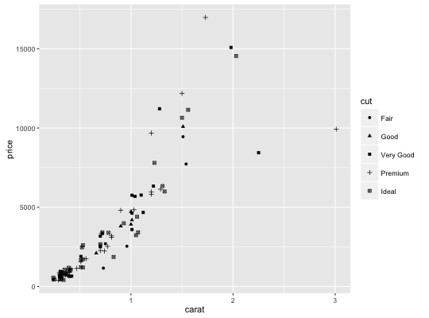
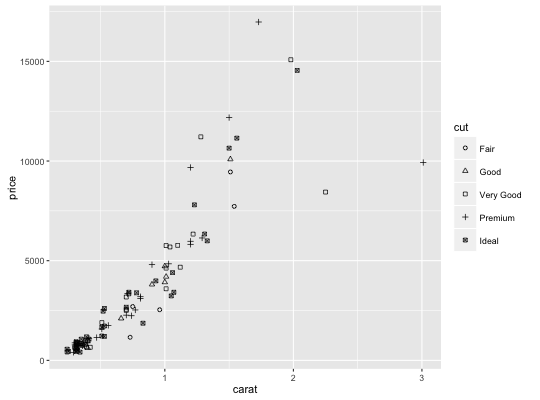
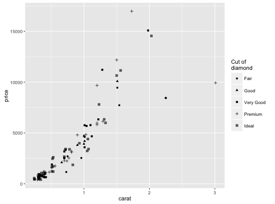
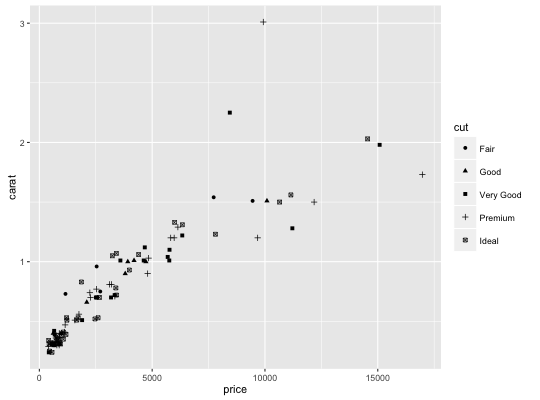

Scale for shapes, aka glyphs.
Usage
scale_shape(..., solid = TRUE)scale_shape_discrete(..., solid = TRUE)scale_shape_continuous(...)
Arguments
- ...
- common discrete scale parameters:
name,breaks,labels,na.value,limitsandguide. Seediscrete_scalefor more details - solid
- Are the shapes solid,
TRUE, or hollowFALSE?
Description
A continuous variable can not be mapped to shape.
Examples
dsmall <- diamonds[sample(nrow(diamonds), 100), ] (d <- ggplot(dsmall, aes(carat, price)) + geom_point(aes(shape = cut)))
d + scale_shape(solid = TRUE) # the defaultd + scale_shape(solid = FALSE)
d + scale_shape(name = "Cut of diamond")d + scale_shape(name = "Cut of\ndiamond")
# To change order of levels, change order of # underlying factor levels(dsmall$cut) <- c("Fair", "Good", "Very Good", "Premium", "Ideal") # Need to recreate plot to pick up new data ggplot(dsmall, aes(price, carat)) + geom_point(aes(shape = cut))
# Or for short: d %+% dsmall